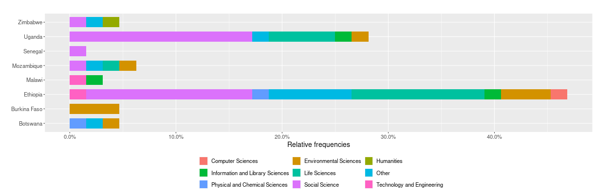
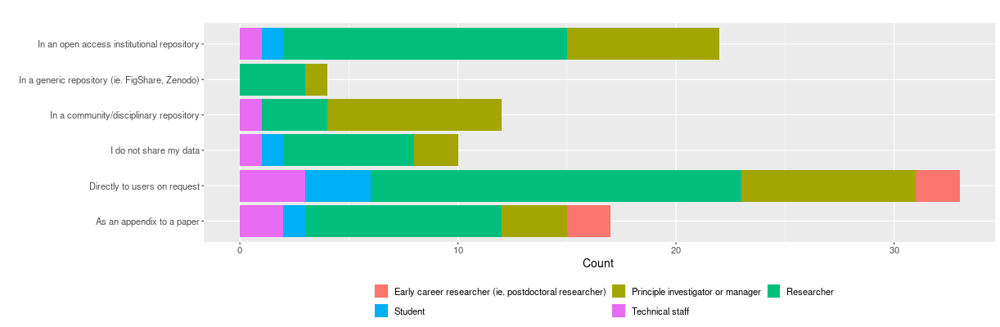
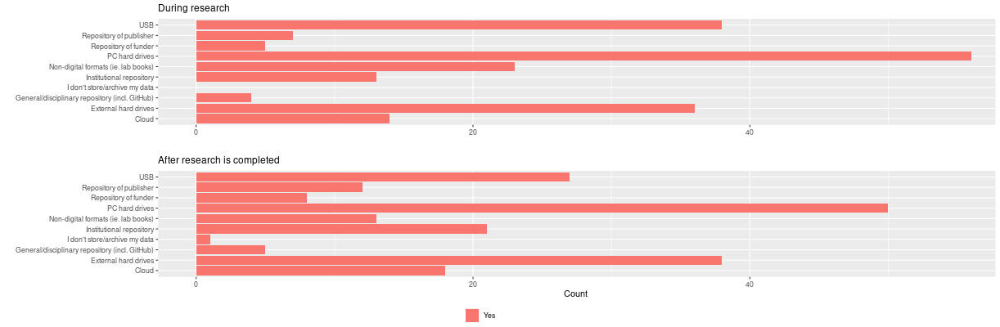
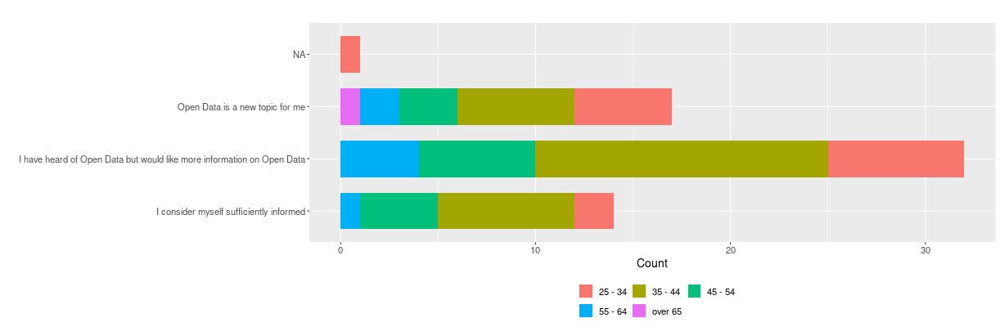
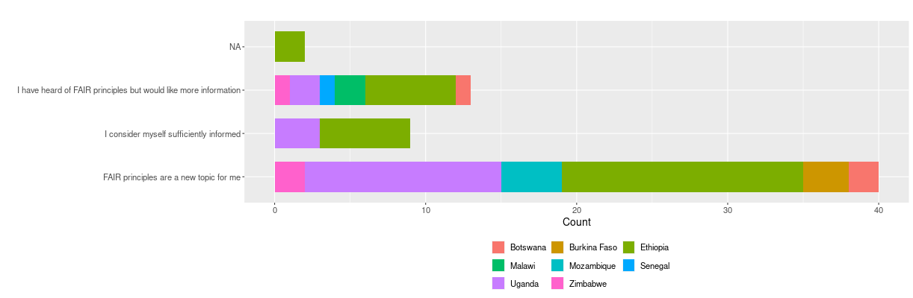

Survey results released
Between September 2020 and January 2021, our open data practices survey targeting researchers in eight African countries was live via the JISC Online Survey Tool. The survey was available in three languages including English, French and Portuguese. During this time we received 83 responses including:
- English: 68
- French: 12
- Portuguese: 3
Data
Discrepancies between some of the survey questions across the three languages (such as the question ordering, type and options) as well as the necessary omission of some responses due to ineligibility of some of the respondents (e.g. respondent did not answer the question regarding country), led to a smaller number of usable responses. The final data set consisted of 64 responses, including:
- English: 58
- French: 4
- Portuguese: 2
The distribution of respondents’ countries and the discipline of their highest degree is shown in the figure below:

Information on the data cleaning process can be found in the README.md document on the SODP Data Analysis GitHub site. This GitHub site also contains the data files (raw and cleaned) as well as the R code used for the data visualisations and Shiny App.
Interactive web app for data visualisation
Due to the large number of questions in the dataset and the requirement for cross referencing questions relating to the IAD framework with demographics, we developed an interactive web app where users can explore the data visually. The app is developed in Shiny, “an R package that makes it easy to build interactive web apps straight from R”. The data visualisations can all be found on the SODP Shiny App.
Data visualisation
In this blog post, we share some of the insights gained from the survey results. These are just a few examples of the interactive plots available from the SODP data visualisation Shiny App. The results from all of the survey questions can be explored and cross tabulated with any of the respondents’ demographics. The full suite of the interactive plots are available on the SODP data visualisation Shiny App. We caution readers not to draw conclusions based on these plots due to the small, non-representative dataset.
Have you made the research data that you used or created as part of your most recent research project available in any of the following ways?

Where did you store the data you created while you were conducting your research and after research was completed?

What other concerns influence your sharing of datasets?

My understanding of the open data movement is sufficient to take part in open data research activities:

What value does Open Data contribute?

How familiar are you with the FAIR principles related to open data?
